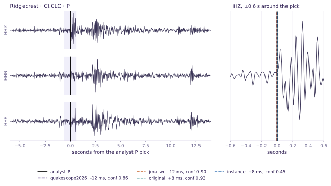
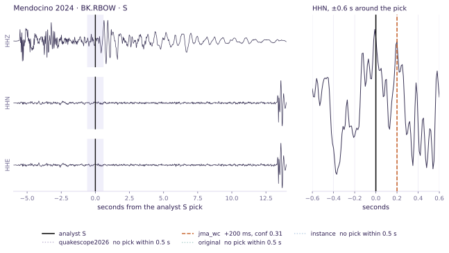
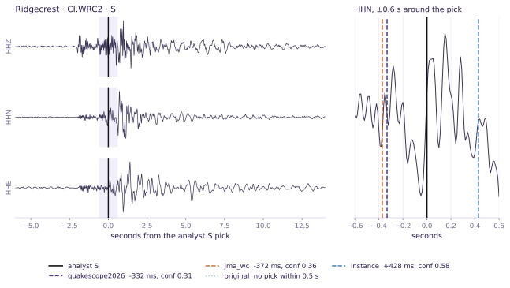
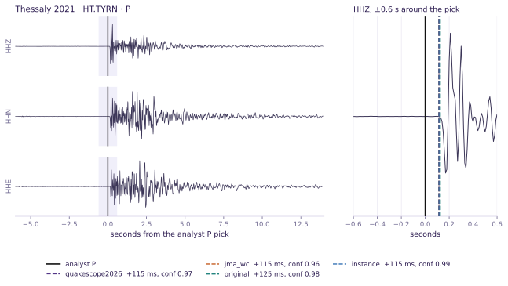
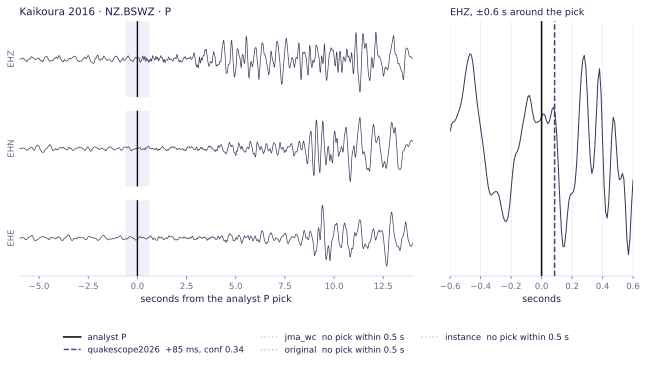
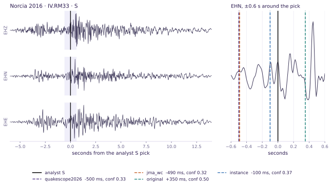

The board
Recall per track at each weight set's own threshold
Recall is the fraction of analyst arrivals recovered within 0.5 s on the same station and phase, weighted by the number of reference arrivals, so a sequence with 701 arrivals counts more than one with 12. Each weight set is read at the threshold that maximises its own score on the track, because a confidence of 0.3 from one model and 0.3 from another do not put two models at the same operating point. The columns to the right give the same weight sets under the other two protocols, both defined below the tables.
Track 1: western United States
The region the QuakeScope campaign catalogues. Mainshock-aftershock sequences chosen to vary network, magnitude and era, with analyst arrivals pulled from ANSS through the SCEDC and NCEDC event services. This track asks whether a weight set serves the catalogue we are building.
8 sequence-phases, 1,064 reference arrivals.
| # | weight set | recall at its own threshold | threshold used | sequence-phases led | recall at a shared 0.3 | recall at an equal pick count | median onset error (s) |
|---|---|---|---|---|---|---|---|
| 1 | quakescope2026 | 0.630 | 0.45 | 4 / 8 | 0.639 | 0.517 | 0.042 |
| 2 | jma_wc | 0.583 | 0.51 | 2 / 8 | 0.647 | 0.507 | 0.039 |
| 3 | original | 0.572 | 0.67 | 1 / 8 | 0.704 | 0.474 | 0.061 |
| 4 | instance | 0.509 | 0.50 | 1 / 8 | 0.420 | 0.513 | 0.063 |
Track 2: outside the United States
Sequences on other networks, none of them in the curated corpora the weight sets were trained on, each with the operator's own reviewed arrivals. This track asks which scientific use cases a weight set serves when the region is not its own.
6 sequence-phases, 2,898 reference arrivals.
| # | weight set | recall at its own threshold | threshold used | sequence-phases led | recall at a shared 0.3 | recall at an equal pick count | median onset error (s) |
|---|---|---|---|---|---|---|---|
| 1 | original | 0.605 | 0.57 | 3 / 6 | 0.724 | 0.516 | 0.121 |
| 2 | instance | 0.596 | 0.43 | 2 / 6 | 0.608 | 0.693 | 0.098 |
| 3 | jma_wc | 0.580 | 0.50 | 1 / 6 | 0.685 | 0.559 | 0.088 |
| 4 | quakescope2026 | 0.577 | 0.46 | 0 / 6 | 0.656 | 0.542 | 0.084 |
What is scored
Two tracks answer two different questions
A picker is chosen for a purpose. One purpose is a regional catalogue, where the network, the instrumentation and the analyst conventions are the ones the picker will meet every day. The other is a sequence somewhere the picker has never been trained, where the question is which scientific use cases it still serves. Those are separate tests and they return different rankings.
| track | sequence | date | M | setting | P arrivals | S arrivals |
|---|---|---|---|---|---|---|
| Track 1 | Mendocino 2024 | 2024-12-05 | 7.0 | Offshore, one-sided geometry, every station 55 km or more | 200 | 113 |
| Monte Cristo | 2020-05-15 | 6.5 | Nevada, Basin and Range, different network | 16 | 12 | |
| Ridgecrest | 2019-07-06 | 7.1 | Eastern California, aftershocks seconds apart | 347 | 298 | |
| San Simeon | 2003-12-22 | 6.5 | Central Coast, 2003 network and instrumentation | 62 | 16 | |
| Track 2 | Kaikoura 2016 | 2016-11-13 | 7.8 | New Zealand, GeoNet. Sparse permanent network, most reviewed picks 80 to 120 km out | 357 | 458 |
| Norcia 2016 | 2016-10-30 | 6.5 | Central Italy, INGV. Apennine normal faulting, permanent plus post-Amatrice temporary stations | 701 | 656 | |
| Thessaly 2021 | 2021-03-03 | 6.3 | Central Greece, NOA. Normal-faulting doublet, a station 5 km from the epicentre | 395 | 331 |
Why these sequences
None of them is in the curated corpora the weight sets were trained on. They were selected to vary the network, the magnitude and the era of the recording, and to put the pickers on the sequence types a catalogue has to handle: a mainshock-aftershock cascade with events seconds apart, a doublet, a 2003 network with 2003 instrumentation, and an offshore geometry where every station is more than 55 km away.
What the reference is and is not
An analyst picked what the location needed and stopped. Recall against that reference
is exact. A model pick with no analyst counterpart may be a false positive or a real
arrival nobody marked, so precision and everything derived from it is a bound, marked
_lb throughout[34].
quakescope2026, the fine-tune this project trained, ranks 1 of 4
in the western United States and 4 of 4 outside it, so the track
matters more than the pooled average: track 2 carries 2,898 of the
3,962 reference arrivals and would set a single number on its own. On track 2 the
recall leader original is also the least accurate on onset time,
0.121 s median error against
0.084 s for quakescope2026.
The board
Three ways to set the threshold give three orderings
A picker emits a pick when its confidence passes a threshold, and the four weight sets put their confidences on different scales. How that threshold is set therefore decides the ranking. All three settings are reported here, pooled across both tracks.
Protocol A: one threshold for every model, 0.3
| # | weight set | what it is | recall | rows won | mean picks emitted |
|---|---|---|---|---|---|
| 1 | original | Zhu & Beroza (2019) weights, northern California | 0.718 | 8 / 14 | 1,080 |
| 2 | jma_wc | PhaseNetWC, Japan Meteorological Agency data, doubled filter width | 0.674 | 4 / 14 | 868 |
| 3 | quakescope2026 | Fine-tune of jma_wc on 527k windows, this project, 2026 | 0.652 | 0 / 14 | 773 |
| 4 | instance | Trained on INSTANCE, Italian national network | 0.558 | 2 / 14 | 431 |
Protocol B: every model emitting the same number of picks
| # | weight set | what it is | recall | rows won | most picks it can emit |
|---|---|---|---|---|---|
| 1 | instance | Trained on INSTANCE, Italian national network | 0.645 | 12 / 14 | 948 |
| 2 | jma_wc | PhaseNetWC, Japan Meteorological Agency data, doubled filter width | 0.545 | 0 / 14 | 2,055 |
| 3 | quakescope2026 | Fine-tune of jma_wc on 527k windows, this project, 2026 | 0.535 | 2 / 14 | 1,906 |
| 4 | original | Zhu & Beroza (2019) weights, northern California | 0.504 | 0 / 14 | 2,046 |
Protocol C: each model at its own best threshold
| # | weight set | what it is | recall | rows won | mean threshold used |
|---|---|---|---|---|---|
| 1 | original | Zhu & Beroza (2019) weights, northern California | 0.596 | 4 / 14 | 0.63 |
| 2 | quakescope2026 | Fine-tune of jma_wc on 527k windows, this project, 2026 | 0.591 | 4 / 14 | 0.46 |
| 3 | jma_wc | PhaseNetWC, Japan Meteorological Agency data, doubled filter width | 0.581 | 3 / 14 | 0.50 |
| 4 | instance | Trained on INSTANCE, Italian national network | 0.573 | 3 / 14 | 0.47 |
Most of the spread is the protocol
The spread between best and worst weight set is 0.161 recall under protocol A and 0.023 under protocol C, so 86 % of the apparent difference between these four models comes from holding the threshold fixed rather than from how they pick. Under protocol C the win counts are 4 / 4 / 3 / 3 across 14 rows, which is not a ranking. Detection is the axis on which these four weight sets are hardest to separate. The three axes below separate them.
The board
Onset time, calibration and phase identification
A bulletin leaves all three of these identifiable. They are also what a location and a magnitude consume, and they separate the four weight sets where detection does not.
Onset time
| phase | weight set | matched picks | MedianAE (s) | MAE (s) | median bias (s) | within 0.1 s | gross error >0.5 s |
|---|---|---|---|---|---|---|---|
| P | quakescope2026 | 1,644 | 0.067 | 0.164 | +0.024 | 0.671 | 0.092 |
| jma_wc | 1,721 | 0.068 | 0.171 | +0.020 | 0.665 | 0.099 | |
| instance | 1,398 | 0.084 | 0.184 | +0.007 | 0.615 | 0.098 | |
| original | 1,662 | 0.085 | 0.205 | +0.054 | 0.601 | 0.120 | |
| S | quakescope2026 | 1,174 | 0.084 | 0.161 | +0.026 | 0.640 | 0.073 |
| jma_wc | 1,217 | 0.087 | 0.171 | -0.009 | 0.620 | 0.079 | |
| instance | 1,019 | 0.101 | 0.169 | -0.023 | 0.561 | 0.070 | |
| original | 1,593 | 0.127 | 0.236 | +0.101 | 0.524 | 0.132 |
Confidence calibration
Every downstream user thresholds on conf, and an associator weights by
it[28, 29]. Expected calibration error is the mean gap between
stated confidence and observed agreement, weighted by bin count[31]. Against a
bulletin the observed rate is a lower bound, so the quantity here is ece_lb. The
shape of the curve is what makes one threshold mean different things to different weight
sets.
There is a reason beyond training for the gap. A segmentation picker is trained against a kernel placed on the labelled arrival time, and the height of the output peak it is read at is neither the probability that a phase exists nor the probability attached to the arrival time[32]. The curves below measure a quantity that the architecture does not define as a probability in the first place.
instance is the best calibrated and original the worst, by a
factor of 1.9.
That is the mechanism behind protocol A's ordering: the worst-calibrated model is the most
liberal at any given threshold, so a fixed threshold flatters it.| weight set | ECElb, global | ECElb, us | picks scored |
|---|---|---|---|
| instance | 0.089 | 0.174 | 16,157 |
| quakescope2026 | 0.152 | 0.152 | 34,325 |
| jma_wc | 0.165 | 0.176 | 36,321 |
| original | 0.254 | 0.248 | 33,802 |
Phase identification and duplicate picks
A P reported where the analyst marked an S is a different failure from a miss: it survives association and moves a location. Both sides carry a phase label, so this is identifiable where precision is not.
| weight set | P arrivals picked as S | S arrivals picked as P | swap rate | duplicate rate |
|---|---|---|---|---|
| instance | 7 / 2078 | 7 / 1884 | 0.0035 | 0.000 |
| jma_wc | 11 / 2078 | 15 / 1884 | 0.0066 | 0.000 |
| quakescope2026 | 17 / 2078 | 13 / 1884 | 0.0076 | 0.000 |
| original | 24 / 2078 | 21 / 1884 | 0.0114 | 0.000 |
Inference cost
A picker that cannot be run across the archive cannot build the catalogue, so cost belongs on the board next to recall. It is a scoring axis here with a fixed protocol and no numbers yet, which is why rule R9 below is only partly met.
| quantity | unit | how to report it | status |
|---|---|---|---|
| Model time | s per station-day | Wall clock for the forward pass alone, at a stated batch size and window
overlap, excluding data read. Architecture drives this: the doubled filter width of
jma_wc and its fine-tune costs more per window than
original. |
not measured here |
| End-to-end time | s per station-day | Wall clock including the archive read, which dominates at campaign scale and depends on the store rather than the model. | not measured here |
| Peak memory | MB resident | Peak resident set for one worker at the stated batch size. It sets the task size, and a model that does not fit the smallest task is more expensive than its per-window time suggests. | not measured here |
| Cost | USD per 1,000 station-days | vCPU-hours times the stated instance price, summed over attempts rather than jobs, so retries and preemptions are counted. The QuakeScope campaign measures this per campaign and not per weight set. | campaign only |
Pick uncertainty comes next
Every number on this board treats a pick as a time and a scalar confidence. Two lines of work make that assumption avoidable, and neither has a column here yet.
Ensemble pickers report the spread across models as well as the pick, so a disagreement between architectures becomes a usable uncertainty rather than a hidden one[33]. Separately, the detection probability and the arrival-time probability can be estimated as the distinct quantities they are, instead of being read off one output peak[32]. A board that scored those would replace the calibration curve above with something a location code could consume directly: an arrival time with a standard error, scored by whether the stated error matches the observed residual distribution. That is the next axis to add.
Why this board exists
The picker is the first stage of most new earthquake catalogues
A catalogue is what seismology hands to fault studies, to hazard models and to whoever has to decide whether a swarm matters. Neural-network pickers built the catalogues that revised fault structure in southern California[25], the 2016-2017 central Italy sequence[26] and magma transport beneath Hawai'i[27], and one runs in real time at the National Earthquake Information Center[24]. The choice of picker therefore has a measurable consequence for the catalogue, and it is usually made by reading a number off a benchmark.
Architecture families
These models are not variations on one design. Each treats a different property of the seismogram as evidence, and that choice sets how it fails.
| Family | Idea | Examples |
|---|---|---|
| Fully convolutional, encoder-decoder | Predict a probability time series per phase over a window. Picks are its peaks | PhaseNet[1] |
| Window classifier | Slide a short window and classify it P, S or noise | GPD[2], ConvNetQuake[3], CNN phase classifiers[4] |
| Recurrent, with attention | Detect the event first, then pick inside it, with explicit sequence memory | EQTransformer[5], DeepPhasePick[6] |
| Transformer | Self-attention over the trace in place of recurrence | EQCCT[7], OBSTransformer[23] |
| Multi-station and operator learning | Pick a network jointly, so one station's noise is another's context | EdgePhase[8], phase neural operator[9] |
| Pretrained backbones | One self-supervised model, fine-tuned per task | SeisLM[10] |
Training corpora
Each model is trained on a labelled corpus from a different network, with its own instrumentation, noise, depth distribution and analyst conventions. A picker evaluated near its training distribution is answering an easier question than the same picker deployed elsewhere, which is what makes a single benchmark number hard to read.
The corpora also carry artefacts. Labels inherited from an operator pipeline include mislabelled and duplicated arrivals, windows where the marked phase is not the first arrival, and traces whose metadata does not describe the recording. CREW was assembled with semi-supervised quality control for that reason[15], and the regional pickers trained on it are the current demonstration that a cleaner corpus changes what a model learns[16]. Excluding artefact-contaminated windows from both the training and the test set is the design of the retraining this project runs, and it is why a benchmark assembled from the same curated corpora a model was trained on cannot settle whether the model generalises.
| Corpus | Source network | Used here |
|---|---|---|
| STEAD[11] | Global, mostly regional distances | upstream of several weight sets |
| INSTANCE[12] | Italian national network | trains instance. Norcia is in-domain for it |
| DiTing[13] | China | not scored here |
| PNW[14] | Pacific Northwest, incl. surface events | in the quakescope2026 fine-tune corpus |
| CREW[15] | Regional, continental US | not scored here |
| TXED[17] | Texas | not scored here |
| LEN-DB[18] | Global, local events | not scored here |
| OBS corpora[22, 23] | Ocean-bottom deployments | offshore track only |
Scoring against an operator bulletin
Münchmeyer et al.[20] score pickers across regions on labelled datasets and report the cross-domain result: a picker transfers between regions with mild degradation and does not transfer from regional to teleseismic distances. Parametric tests of a single model show how strongly a reported score depends on the thresholds chosen[21].
A deployment differs from a labelled-dataset benchmark in three ways, each of which changes the answer:
- The reference is an operator bulletin, not a labelled set. An analyst picked what a location needed and stopped. An unmatched model pick is a mixture of a false positive and a real arrival nobody marked, which is a positive-unlabeled learning problem[34]: precision, F1 and MCC[35] are not identifiable, and every number reported for them is a bound.
- A threshold is not an operating point. The four weight sets put their probabilities on different scales, so at a shared 0.3 they emit between 430 and 1080 picks per sequence-phase on average. Recall at a shared threshold measures liberality as much as skill. The protocol decides the winner, which is the benchmark lottery[36] in a domain where it can be measured.
- The deployment is the experiment. Picking 114 million station-days exposes failure modes a windowed benchmark cannot: resumed jobs overwriting their own output, station metadata that truncates epochs, archive listings that fail silently. Each of those changed catalogue completeness by more than the difference between the four models below, and the quantity a catalogue user actually cares about is completeness[30].
Scope
This is a scored comparison on public bulletins with a public, deterministic scorer, reported under three protocols at once. It has no hidden test set, so a result here is not yet citable as a benchmark result. The standard below scores the track against nine rules and records where it fails[37].
On the record
What the weight sets did on individual arrivals
Every number above is a count over thousands of arrivals. These are 6 of them, one record at a time: the waveform the benchmark read, the analyst pick in black, and each weight set's pick where it made one. The cases are chosen by what the models did rather than by hand, so they move only when the picks move. Each record downloads as MiniSEED.

Ridgecrest · CI.CLC · P, 2019-07-06 03:40:06 UTC · chosen because every weight set recovered this arrival.
quakescope2026 -12 ms, conf 0.85 · jma_wc -12 ms, conf 0.90 · original +8 ms, conf 0.93 · instance +8 ms, conf 0.45
download this record (HHE/HHN/HHZ, 100 Hz, MiniSEED) · picks for the whole sequence are in the data below

Mendocino 2024 · BK.RBOW · S, 2024-12-05 20:00:34 UTC · chosen because instance, original, quakescope2026 did not recover this arrival at a 0.3 threshold.
jma_wc +200 ms, conf 0.31 · instance no pick · original no pick · quakescope2026 no pick
download this record (HHE/HHN/HHZ, 100 Hz, MiniSEED) · picks for the whole sequence are in the data below

Ridgecrest · CI.WRC2 · S, 2019-07-06 03:57:55 UTC · chosen because the weight sets disagree by 800 ms on the same arrival.
quakescope2026 -332 ms, conf 0.31 · jma_wc -372 ms, conf 0.36 · instance +428 ms, conf 0.58 · original no pick
download this record (HHE/HHN/HHZ, 100 Hz, MiniSEED) · picks for the whole sequence are in the data below

Thessaly 2021 · HT.TYRN · P, 2021-03-03 12:20:11 UTC · chosen because every weight set recovered this arrival.
quakescope2026 +115 ms, conf 0.97 · jma_wc +115 ms, conf 0.96 · original +125 ms, conf 0.98 · instance +115 ms, conf 0.99
download this record (HHE/HHN/HHZ, 100 Hz, MiniSEED) · picks for the whole sequence are in the data below

Kaikoura 2016 · NZ.BSWZ · P, 2016-11-13 11:22:04 UTC · chosen because instance, jma_wc, original did not recover this arrival at a 0.3 threshold.
quakescope2026 +85 ms, conf 0.34 · instance no pick · jma_wc no pick · original no pick
download this record (EHE/EHN/EHZ, 100 Hz, MiniSEED) · picks for the whole sequence are in the data below

Norcia 2016 · IV.RM33 · S, 2016-10-30 07:37:34 UTC · chosen because the weight sets disagree by 850 ms on the same arrival.
quakescope2026 -500 ms, conf 0.33 · jma_wc -490 ms, conf 0.32 · original +350 ms, conf 0.50 · instance -100 ms, conf 0.37
download this record (EHE/EHN/EHZ, 100 Hz, MiniSEED) · picks for the whole sequence are in the data below
What the board measures
The metrics on this board
The third column is the one that matters to anyone building an evaluation. A metric that is standard in machine learning is not automatically available against an incomplete reference, and marking which are and which are not is most of the method.
| metric | definition | against a bulletin | source | reason |
|---|---|---|---|---|
| Recall | matched reference arrivals / reference arrivals | exact | [20] | Reported first. Unaffected by the reference being incomplete. |
| Picks emitted | count above the threshold | exact | Recall alone is gameable by lowering the threshold. Always report both. | |
| Recall at an equal pick count | each model's curve read where all emit the same number of picks | exact | [20] | Survives a change of threshold. Capped by the most conservative model. |
| Precision, F1 | matched / emitted, and their harmonic mean | lower bound | [34, 35] | An unmatched pick may be an arrival the analyst never marked. Named _lb here. Comparable between models on the same reference, not against a labelled-dataset number. |
| MCC | Matthews correlation coefficient | not computable | [35] | Needs true negatives, which a continuous record with an incomplete reference does not define. |
| MAE, RMSE | mean absolute and root-mean-square residual | exact | [20] | Report both: RMSE responds to outliers, MAE does not. |
| MedianAE, median bias | outlier-insensitive scatter, and systematic earliness or lateness | exact | [20, 21] | Separates a picker that is consistently late from one that is noisy. |
| Gross-error rate | fraction of wide-matched residuals beyond 0.5 s | exact | [20] | Must be computed from residuals matched wider than the detection tolerance, or it describes the tolerance. |
| Fraction within 0.1 s | share of matched picks inside 0.1 s | exact | [1] | The tolerance the original PhaseNet paper scored at, so it is comparable to older literature. |
| Reliability curve, ECE | observed agreement per confidence bin, and its mean gap | lower bound | [31] | Tells you whether a threshold transfers between models. It usually does not. |
| Phase swap rate | arrivals matched by a pick of the other phase | exact | [20] | Survives association and moves a location. |
| Duplicate rate | extra picks within tolerance of an already-matched arrival | exact | [28, 29] | Invisible in recall. Costs an associator work. |
| Model time, memory, cost | seconds and MB per station-day, and USD per 1,000 station-days | protocol set | A model too slow or too large to run across the archive cannot build the catalogue. The reporting protocol is fixed above. No per-weight numbers yet. | |
| Pick uncertainty | a stated error on the arrival time, scored against the observed residual spread | not yet scored | [33, 32] | The peak height of a segmentation picker is neither the detection probability nor the timing probability, so a model that reports the two separately needs its own column. |
| Catalogue completeness | magnitude above which the catalogue is complete | downstream | [30] | The quantity a catalogue user cares about. Absent from this board, which needs association and location as well as picks. |
The standard
Nine rules for a benchmark a paper can cite
The standard HazEvalHub applies to every evaluation it collects. A picker comparison that fails any of these still tells you something, but it does not settle a question. Of 9 rules this board meets 3, meets 4 in part, and fails 2.
| # | rule | status | this board |
|---|---|---|---|
| R1 | The scored task is fixed before anyone runs it | partly | Phase, station, a 0.5 s matching tolerance, greedy nearest one-to-one matching and a separate 2 s residual tolerance are fixed in code and published. Nobody outside the project can submit a run, so the specification currently binds only us. |
| R2 | The reference arrivals are withheld from the models being scored | not met | Every bulletin here was public before these weight sets were trained. A weight set may have seen these very arrivals, so the board measures picking skill and familiarity with the sequence together and cannot separate them. |
| R3 | The scorer is public, deterministic and versioned | met | scripts/score_picks.py and sb_catalog/src/benchmark_metrics.py, pinned by 16 unit tests, byte-identical output across processes, versioned in git. Anyone can rerun the board on their own picks. |
| R4 | The standard the field already uses is on the board | met | The baseline for phase picking is the analyst. Recall is measured directly against reviewed analyst arrivals, pulled from ANSS on track 1 and from the operating network on track 2, so every row is scored against what a human picker produced for the same events on the same stations. |
| R5 | A published model from another group is scored alongside | met | Three of the four weight sets are published models from other groups: original[1], jma_wc and instance, the last trained on INSTANCE[12]. The fourth is ours. |
| R6 | Training overlap with the scored regions is stated per sequence | partly | Stated and not quantified. Norcia is in-domain for instance, and the quakescope2026 fine-tuning corpus includes INSTANCE and Pacific Northwest data[14]. Neither overlap has been measured against the scored arrivals. |
| R7 | The reference set is archived so a score can be reproduced | not met | Arrivals are pulled live from the SCEDC, NCEDC, GeoNet, INGV and NOA event services. Operators revise bulletins, so a number on this board is not reproducible after a revision. The fix is a DOI-archived arrival set with the station list and time windows. |
| R8 | The benchmark is run by people other than those whose model it ranks | partly | SeisSCOPED maintains the board and one of the four weight sets is ours. It does not win outside its own region: quakescope2026 ranks 1 of 4 on track 1 and 4 of 4 on track 2. |
| R9 | Every row states the model version, the data and the cost | partly | Weight set, SeisBench version, notebook and execution time are stamped in the footer, and the reference agency is stated per track. Model time, memory and cost per station-day have a fixed reporting protocol on the board and no per-weight numbers yet. |
R2 is the binding limit
The reference this board needs is a set of arrivals from sequences that postdate the training window of every weight set it ranks, picked by at least two analysts with a third adjudicating disagreements. Relabelling existing curated data would be cheaper and would measure memorisation. That is an analyst campaign rather than a software task, and it is the critical path to a number a paper can cite.
Data
Download what the board is computed from
Every pick on both sides of every comparison, as CSV, plus the metric tables the page reads. Nothing here needs an account.
| file | what is in it | rows | size |
|---|---|---|---|
| us_sequences/model_picks.csv | Every pick the four weight sets emitted on the western US sequences, with confidences | 41,579 | 3.3 MB |
| us_sequences/reference_picks.csv | The analyst arrivals those were scored against | 1,064 | 49 kB |
| global_sequences/model_picks.csv | The same, for the sequences outside the United States | 79,026 | 6.3 MB |
| global_sequences/reference_picks.csv | The operators' reviewed arrivals | 2,898 | 144 kB |
| detection_full.csv | Recall, precision and F1 bounds per sequence, phase and weight set | 64 | 10 kB |
| timing_full.csv | Onset-time statistics per sequence, phase and weight set | 64 | 18 kB |
| calibration_full.csv | Expected calibration error per study and weight set | 8 | 0 kB |
| phase_quality_full.csv | Phase swaps and duplicate picks per sequence | 32 | 2 kB |
| summary_matched_budget.csv | Recall read at an equal pick count | 11 | 1 kB |
Waveforms
The archives serve the waveforms openly, so they are fetched rather than republished: the SCEDC and NCEDC public buckets for the western United States track, the operator's FDSN service for the global track. Downloading the benchmark data is an executed notebook that pulls the picks, fetches a window from each archive and plots the record with every weight set's pick on it. The records behind the examples above also download individually as MiniSEED.
fs = S3FileSystem(anon=True) # western US, no account
prefix = f"scedc-pds/continuous_waveforms/{year}/{year}_{doy:03d}/"
Client("GEONET").get_waveforms("NZ", "KHZ", "*", "HH?", t0, t1) # global trackCiting a number from this page
Quote the weight set, the track, the protocol and the tolerance, because a recall without those four is not reproducible. The footer carries the notebook, the execution time and the SeisBench version behind every table.
Score your own picks
The scorer takes two CSV files
The scorer behind every number above is public and runs on anybody's picks.
It imports nothing but numpy and pandas.
# the arrivals you trust: station,phase,time
# what your model emitted: station,phase,time,conf
python scripts/score_picks.py --reference arrivals.csv --picks mypicks.csv --out scores/
# see it work on synthetic picks with known properties, no data needed
python scripts/score_picks.py --demoRun your model once at a low confidence floor
and keep every pick. Each threshold above is then a filter over one file rather than another
pass over the waveforms. Optional dataset and model columns score
several sequences or models in one run, and the column names our exports and SeisBench use
(sequence, weights, probability,
pick_time) are accepted without renaming. Output is
detection.csv, timing.csv, calibration.csv,
phase_quality.csv and sweep.csv.
If your reference marks every arrival, pass --exhaustive and
precision and F1 are reported under those names instead of as bounds.
Reproducing this board
The methods notebook computes every table here from the exported picks and checks, on every row of both sequence studies, that the standalone scorer reproduces it bit for bit. Source and data: SeisSCOPED/QuakeScope.
What would move a rank
A held-out sequence nobody has looked at, from the embargoed acceptance suite. Model time, memory and cost per station-day on every row. Association and location, so that completeness[30] replaces recall as the headline metric. A column for models that report an arrival time with an error rather than a confidence[33, 32].
Limits
What this board cannot claim
- Sample sizes differ by an order of magnitude between sequences, from 12 to 701 reference arrivals. The board weights by arrivals. The per-sequence reading is in the methods notebook.
- Precision and F1 are bounds, so a model that finds real arrivals the analyst skipped is penalised the same as one that invents them. Separating the two requires association, and no association step runs here.
- Protocol B compares the models at a pick count that
instancecaps in all 11 sequence-phases where every limit is measured. Protocol C has no held-out split, so it is an upper bound on a tuned deployment. - Contamination is stated, not measured. Two of the four weight sets have plausible exposure to data from the regions scored here.
- Model runtime differs measurably between these weight sets and is absent from the board. A model too slow to run across a fifteen-year archive cannot be deployed, whatever its recall.
References
Sources
Every entry was checked against Crossref or arXiv at build time.
- Zhu, W. and Beroza, G. C. (2019). PhaseNet: a deep-neural-network-based seismic arrival-time picking method. Geophysical Journal International 216, 261-273. doi:10.1093/gji/ggy423
- Ross, Z. E., Meier, M.-A., Hauksson, E. and Heaton, T. H. (2018). Generalized seismic phase detection with deep learning. Bulletin of the Seismological Society of America 108, 2894-2901. doi:10.1785/0120180080
- Perol, T., Gharbi, M. and Denolle, M. (2018). Convolutional neural network for earthquake detection and location. Science Advances 4, e1700578. doi:10.1126/sciadv.1700578
- Woollam, J., Rietbrock, A., Bueno, A. and De Angelis, S. (2019). Convolutional neural network for seismic phase classification, performance demonstration over a local seismic network. Seismological Research Letters 90, 491-502. doi:10.1785/0220180312
- Mousavi, S. M., Ellsworth, W. L., Zhu, W., Chuang, L. Y. and Beroza, G. C. (2020). Earthquake transformer: an attentive deep-learning model for simultaneous earthquake detection and phase picking. Nature Communications 11, 3952. doi:10.1038/s41467-020-17591-w
- Soto, H. and Schurr, B. (2021). DeepPhasePick: a method for detecting and picking seismic phases from local earthquakes based on highly optimized convolutional and recurrent deep neural networks. Geophysical Journal International 227, 1268-1286. doi:10.1093/gji/ggab266
- Saad, O. M. et al. (2023). EQCCT: a production-ready earthquake detection and phase-picking method using the compact convolutional transformer. IEEE Transactions on Geoscience and Remote Sensing 61, 5910915. doi:10.1109/TGRS.2023.3319440
- Feng, T., Mohanna, S. and Meng, L. (2022). EdgePhase: a deep learning model for multi-station seismic phase picking. Geochemistry, Geophysics, Geosystems 23, e2022GC010453. doi:10.1029/2022GC010453
- Sun, H., Ross, Z. E., Zhu, W. and Azizzadenesheli, K. (2023). Phase neural operator for multi-station picking of seismic arrivals. Geophysical Research Letters 50, e2023GL106434. doi:10.1029/2023GL106434
- Liu, T. et al. (2024). SeisLM: a foundation model for seismic waveforms. arXiv:2410.15765. arXiv:2410.15765
- Mousavi, S. M., Sheng, Y., Zhu, W. and Beroza, G. C. (2019). STanford EArthquake Dataset (STEAD): a global data set of seismic signals for AI. IEEE Access 7, 179464-179476. doi:10.1109/ACCESS.2019.2947848
- Michelini, A. et al. (2021). INSTANCE: the Italian seismic dataset for machine learning. Earth System Science Data 13, 5509-5544. doi:10.5194/essd-13-5509-2021
- Zhao, M. et al. (2023). DiTing: a large-scale Chinese seismic benchmark dataset for artificial intelligence in seismology. Earthquake Science 36, 84-94. doi:10.1016/j.eqs.2022.01.022
- Ni, Y., Denolle, M., Jiang, C., Bodin, T., Ulberg, C. and Shi, Q. (2023). Curated Pacific Northwest AI-ready seismic dataset. Seismica 2(1). doi:10.26443/seismica.v2i1.368
- Aguilar Suarez, A. L. and Beroza, G. C. (2024). Curated Regional Earthquake Waveforms (CREW) dataset. Seismica 3(1). doi:10.26443/seismica.v3i1.1049
- Aguilar Suarez, A. L. and Beroza, G. C. (2025). Picking regional seismic phase arrival times with deep learning. Seismica 4(1). doi:10.26443/seismica.v4i1.1431
- Chen, Y. et al. (2024). TXED: the Texas earthquake dataset for AI. Seismological Research Letters 95, 2013-2022. doi:10.1785/0220230327
- Magrini, F., Jozinovic, D., Cammarano, F., Michelini, A. and Boschi, L. (2020). Local earthquakes detection: a benchmark dataset of 3-component seismograms built on a global scale. Artificial Intelligence in Geosciences 1, 1-10. doi:10.1016/j.aiig.2020.04.001
- Woollam, J. et al. (2022). SeisBench: a toolbox for machine learning in seismology. Seismological Research Letters 93, 1695-1709. doi:10.1785/0220210324
- Münchmeyer, J. et al. (2022). Which picker fits my data? A quantitative evaluation of deep learning based seismic pickers. Journal of Geophysical Research: Solid Earth 127, e2021JB023499. doi:10.1029/2021JB023499
- Pita-Sllim, O., Chamberlain, C. J., Townend, J. and Warren-Smith, E. (2023). Parametric testing of EQTransformer's performance against a high-quality, manually picked catalog for reliable and accurate seismic phase picking. The Seismic Record 3, 332-341. doi:10.1785/0320230024
- Bornstein, T. et al. (2024). PickBlue: seismic phase picking for ocean bottom seismometers with deep learning. Earth and Space Science 11, e2023EA003332. doi:10.1029/2023EA003332
- Niksejel, A. and Zhang, M. (2024). OBSTransformer: a deep-learning seismic phase picker for OBS data using automated labelling and transfer learning. Geophysical Journal International 237, 485-505. doi:10.1093/gji/ggae049
- Yeck, W. L. et al. (2020). Leveraging deep learning in global 24/7 real-time earthquake monitoring at the National Earthquake Information Center. Seismological Research Letters 92, 469-480. doi:10.1785/0220200178
- Ross, Z. E., Trugman, D. T., Hauksson, E. and Shearer, P. M. (2019). Searching for hidden earthquakes in southern California. Science 364, 767-771. doi:10.1126/science.aaw6888
- Tan, Y. J. et al. (2021). Machine-learning-based high-resolution earthquake catalog reveals how complex fault structures were activated during the 2016-2017 central Italy sequence. The Seismic Record 1, 11-19. doi:10.1785/0320210001
- Wilding, J. D., Zhu, W., Ross, Z. E. and Jackson, J. M. (2023). The magmatic web beneath Hawai'i. Science 379, 462-468. doi:10.1126/science.ade5755
- Zhu, W., McBrearty, I. W., Mousavi, S. M., Ellsworth, W. L. and Beroza, G. C. (2022). Earthquake phase association using a Bayesian Gaussian mixture model. Journal of Geophysical Research: Solid Earth 127, e2021JB023249. doi:10.1029/2021JB023249
- Münchmeyer, J. (2024). PyOcto: a high-throughput seismic phase associator. Seismica 3(1). doi:10.26443/seismica.v3i1.1130
- Woessner, J. and Wiemer, S. (2005). Assessing the quality of earthquake catalogues: estimating the magnitude of completeness and its uncertainty. Bulletin of the Seismological Society of America 95, 684-698. doi:10.1785/0120040007
- Guo, C., Pleiss, G., Sun, Y. and Weinberger, K. Q. (2017). On calibration of modern neural networks. Proceedings of the 34th International Conference on Machine Learning, PMLR 70, 1321-1330. arXiv:1706.04599
- Park, Y., Armstrong, A. D., Yeck, W. L., Shelly, D. R. and Beroza, G. C. (2025). Divide and conquer: separating the two probabilities in seismic phase picking. Geophysical Journal International 243, ggaf333. doi:10.1093/gji/ggaf333
- Yuan, C., Denolle, M. A., Ni, Y., Chen, Y. and Zhu, W. (2023). Better together: ensemble learning for earthquake detection and phase picking. IEEE Transactions on Geoscience and Remote Sensing 61, 5914213. doi:10.1109/TGRS.2023.3320148
- Bekker, J. and Davis, J. (2020). Learning from positive and unlabeled data: a survey. Machine Learning 109, 719-760. doi:10.1007/s10994-020-05877-5
- Chicco, D. and Jurman, G. (2020). The advantages of the Matthews correlation coefficient (MCC) over F1 score and accuracy in binary classification evaluation. BMC Genomics 21, 6. doi:10.1186/s12864-019-6413-7
- Dehghani, M. et al. (2021). The benchmark lottery. arXiv:2107.07002. arXiv:2107.07002
- Raji, I. D., Bender, E. M., Paullada, A., Denton, E. and Hanna, A. (2021). AI and the everything in the whole wide world benchmark. arXiv:2111.15366. arXiv:2111.15366
- Mousavi, S. M. and Beroza, G. C. (2023). Machine learning in earthquake seismology. Annual Review of Earth and Planetary Sciences 51, 105-129. doi:10.1146/annurev-earth-071822-100323